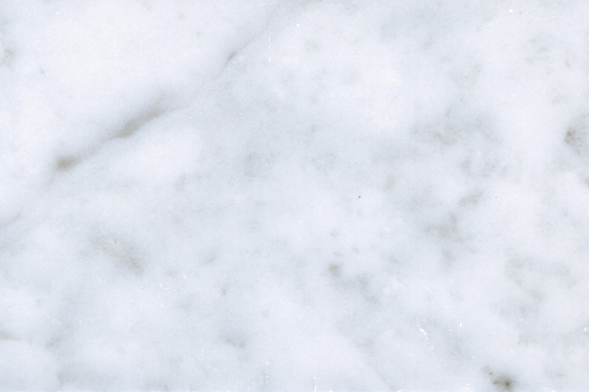
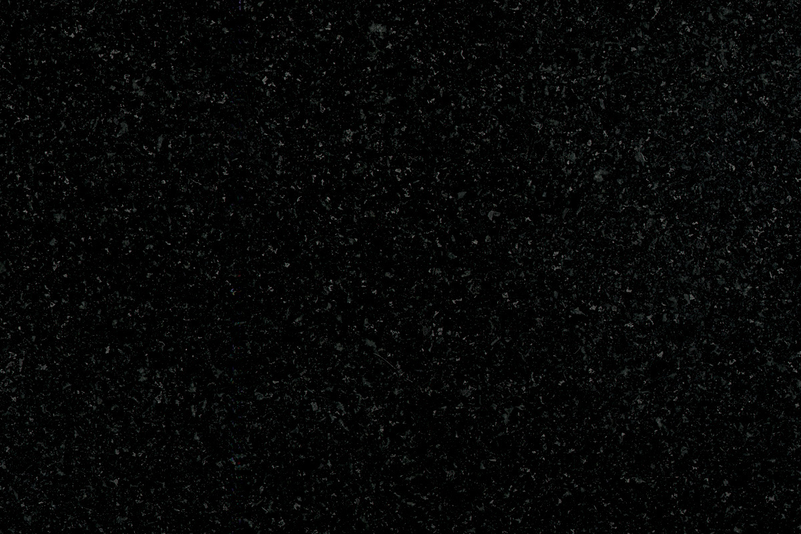
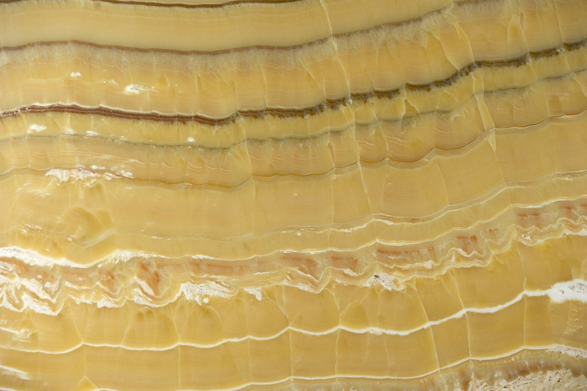
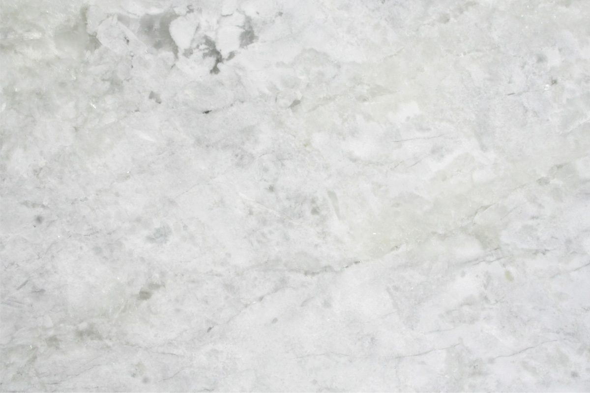
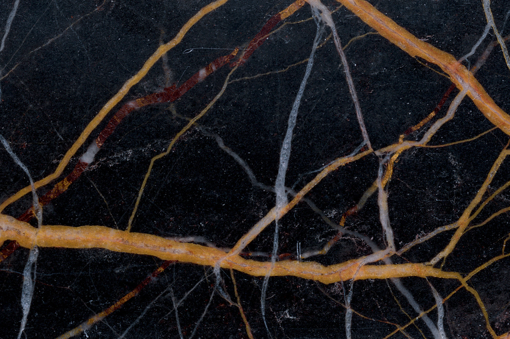
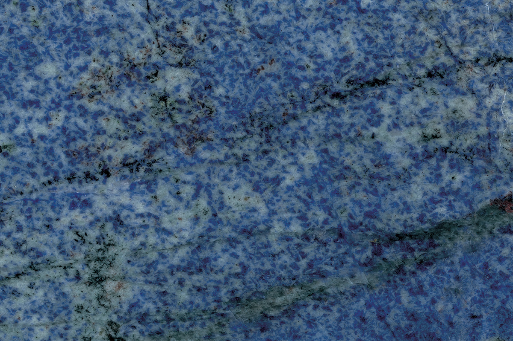
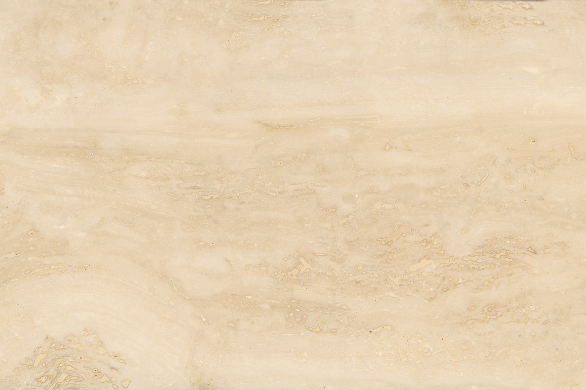
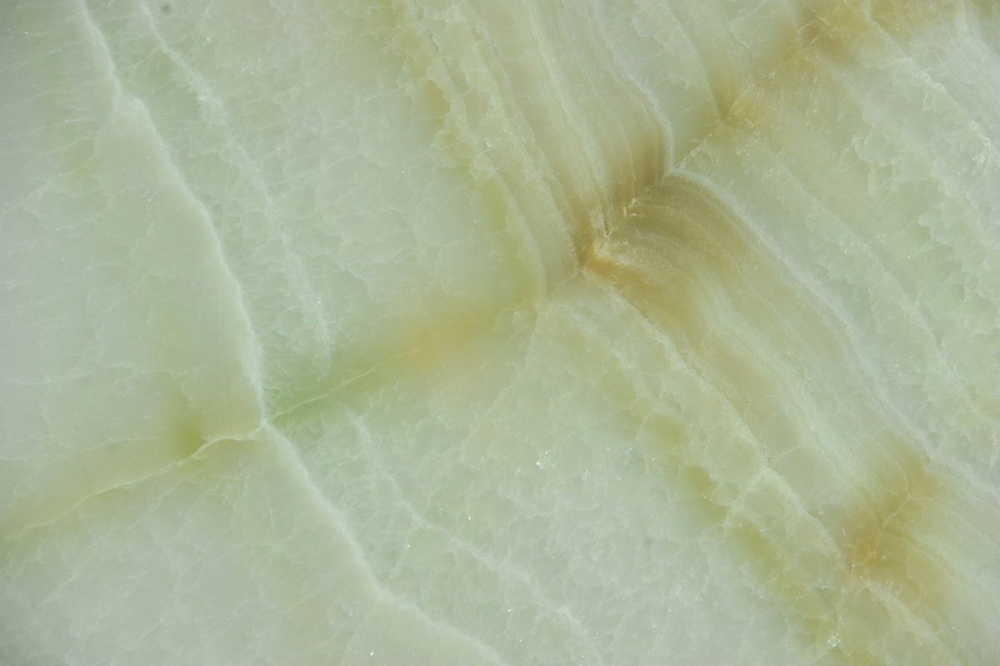

Naravni kamen
Kamen naravnega izvora, primeren za obdelavo in vgradnjo
Glede na uporabo delimo naravni kamen v arhitektonski, stavbni, okrasni, kiparski in tehnični.
Naša zbirka
Skupine naravnega kamna
Obdelujemo domači in tuji kamen — vsaka kamnina nosi svojo barvo, trdoto in teksturo.








Nastanek kamnin
Po geološkem izvoru
Kamnine sestavljajo minerali, ki kamninam dajejo značilno barvo, trdoto in težo. Po geološkem izvoru jih delimo v tri osnovne skupine.
Magmatske kamnine
Nastale s strjevanjem magme; značilna je zrnato-kristalasta struktura. Mednje sodijo granit, sienit, diorit, gabro ter predornine kot bazalt in porfir.
Sedimentne kamnine
Nastale z usedanjem v plasteh — mehanski, kemični in biokemični sedimenti. Mednje sodijo peščenjak, apnenec, travertin, lapor.
Metamorfne kamnine
Nastale s preobrazbo obstoječih kamnin pod pritiskom in toploto. Med najbolj cenjenimi za obdelavo je marmor.
Za kamen v kamnoseštvu vedno uporabljamo pojem naravni kamen — kamen naravnega izvora, primeren za obdelavo in vgradnjo.
Svetovanje
Pomagamo izbrati pravi kamen
Za vsak projekt svetujemo pri izbiri najprimernejše kamnine.
Pošljite povpraševanje